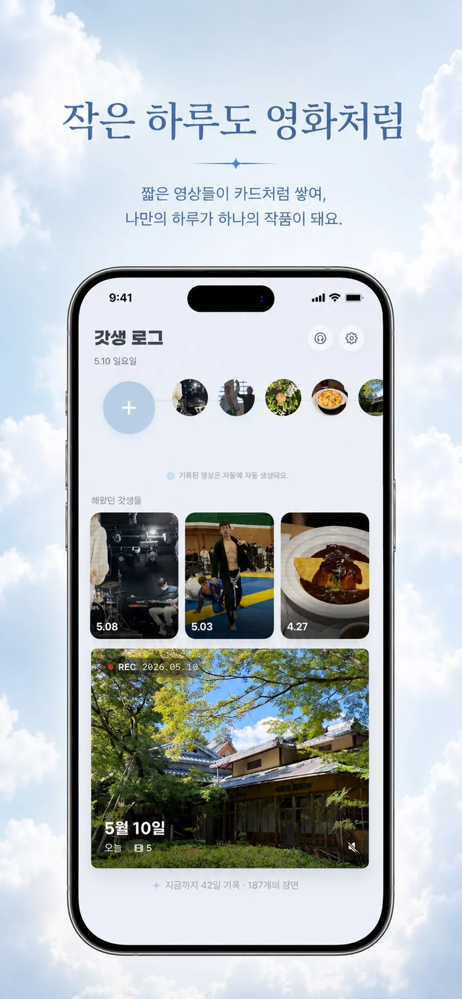
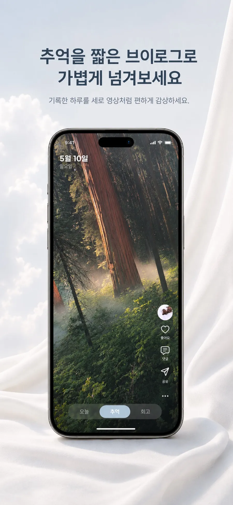

REC · 오늘의 갓생 기록 중
오늘 해낸 일,
오늘 해낸 일,
3초면 한 편의 영화
할 일을 끝낼 때마다 3초만 찍어두세요. 하루가 저물면 흩어진 클립이 한 편의 데일리 브이로그로 알아서 합쳐집니다.
- 3초클립 한 컷
- 자동 합성데일리 브이로그
- 연속 기록꾸준함 추적
REC 2026.05.10
5월 10일 · 오늘의 한 편
작은 하루도 영화처럼


찍기만 하면, 한 편이 완성돼요
-
01
3초 촬영
할 일을 해낼 때마다 딱 3초. 부담 없이 순간을 남겨요.
-
02
자동 합성
하루가 끝나면 클립들이 한 편의 데일리 브이로그로 합쳐져요.
-
03
추억 다시보기
추억 탭에서 지난 하루를 영화처럼 넘겨보고 되새겨요.
꾸준함을 눈으로 확인해요
-
3초 클립
할 일 완료마다 3초씩. 기록이 습관이 되도록 가볍게 설계했어요.
-
자동 브이로그
하루 클립이 하나의 영상으로 자동 합성돼 작품이 돼요.
-
추억 탭
지난 기록 영상을 세로 피드처럼 편하게 다시 감상해요.
-
통계 · 연속 기록
주간·월간 통계와 연속 기록으로 꾸준함을 확인해요.
NOW RECORDING
오늘의 갓생,
오늘의 갓생,
한 편으로 남겨볼까요?
오늘 해낸 작은 일들이 모여 나만의 데일리 브이로그가 됩니다. 지금 갓생로그로 첫 3초를 찍어보세요.